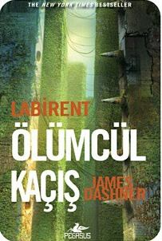
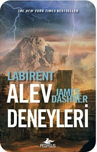

Bu seriyi yazmak ne maceraydı ama. Birçok açıdan benim, editörüm Krista Marino’nun ve yayın temsilcim Michael Bourret’in ortak çabasıydı. Bu iki kişiye ne kadar teşekkür etsem azdır. Ama deneyeceğim.
Random House’taki tüm iyi insanlara teşekkürler, özellikle de Beverly Horowitz ve reklamcılarım Emily Pourciau ile Noreen Herits’e. Ayrıca satış, pazarlama, tasarım, düzelti ve bir kitabın ortaya çıkması için gerekli tüm kısımlardaki inanılmaz ekip üyelerine teşekkürler. Bu seriyi başarılı kıldığınız için teşekkür ederim.
Lauren Abramo ve Dystel&Goderich, kitapların tüm dünyada bulunabilmesini sağladığınız için teşekkürler. Ve onlara bir şans verdikleri için yurtdışındaki tüm yayıncılarıma teşekkürler.
Lynette ve J. Scott Savage, taslakları okuyup yorum yaptığınız için teşekkürler. Emin olun çok daha iyi oldu!
Tüm kitap blog yazarlarına, Facebook arkadaşlarına ve Twitter’daki #dashnerarmy’ye benimle takılıp hikâyelerimi başkalanna duyurdukları için teşekkürler. Size ve tüm okuyucularıma teşekkür ederim. Bu dünya benim için bir gerçeklik oldu ve umarım siz de orada yaşamaktan keyif almışsınızdır.
HATIRLA.
HAYATTA KAL.
KOŞ.

“Açlık Oyunları gibi distopik hikâyeleri sevenler Thomas’la birlikte Kayran’da maceraya sürüklenecekler.”
School Library Journal
“Akıcı anlatımı, akla gelen sayısız soruyu adım adım cevaplaması ve bitmek bilmeyen gerilimiyle Dashner’ın sürükleyici macerası kaçınılmaz sona doğru ilerlerken sizi merak içinde bırakacak.”
Publishers Weekly
KURAL YOK.
YARDIM YOK.
YA BAŞARIRSIN YA DA ÖLÜRSÜN.

İlk kitabı sevenler bu nefes nefese maceranın da esiri olacaklar.”
Childrens Literature
“Bu heyecan dolu kitaptaki ahlaki ikilemler ve ölümcül bir ortamda hayatta kalmaya çalışan çocuklar, hikâyeyi daha da etkileyici bir hale getiriyor.”
VOYA